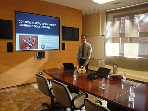
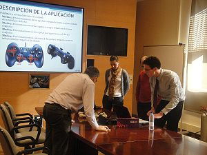
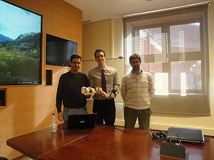
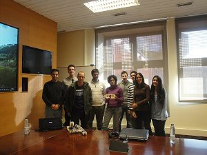

- Tipo: Proyecto fin de carrera
- Título: Control remoto de un robot imprimible de exteriores
- Autor: Julián Marín Mato
- Fecha: 19/Dic/2011
- Titulación: Ingeniería Industrial
- Universidad: Universidad Carlos III de Madrid
- Directores del proyecto: Alberto Valero y Juan González
- Miembros del tribunal:
Fotos
| Álbum de fotos completo |
|---|
|  Julián Marín, antes de comenzar su defensa (click para ampliar) |
 Julián Marín haciendo una demostración a los miembros del tribunal (click para ampliar) |
|  Julián Marín (centro), Alberto Valero (derecha) y Juan Gonzalez (izquierda) (click para ampliar) |
 (click para ampliar) |
Vídeos
|
|
|
|
|
|


Descarga
Documentos
| PFC_Julian_Marin_Mato.pdf | Memoria del proyecto, en PDF |
| PFC_Julian_Marin_Mato-slides.pdf | Transparencias de la presentación en PDF (*) |
| PFC_Julian_Marin_Mato.odt | Fuentes de la memoria (*) |
| PFC_Julian_Marin_Mato.odp | Fuentes de la presentación (*) |
(*) Nota: Tanto el documento de la memoria como la presentación fueron realizados en Microsoft word (decisión de Julián). Por este motivo, al importarlo desde libre-office el formato se pierde :-( En los documentos donde nos interese que perdure la información es recomendable utilizar un formato libre. Si no se hace, al cabo del tiempo la información se perderá.
Software
| OpenRDK-modules.zip | Módulos software, para Open RDK |
| ftrackserver.c | Firmware para la tarjeta Skymega |
Licencia
| |
Enlaces
Noticias
- 19/Enero/2012: Publicado el proyecto (Blog)